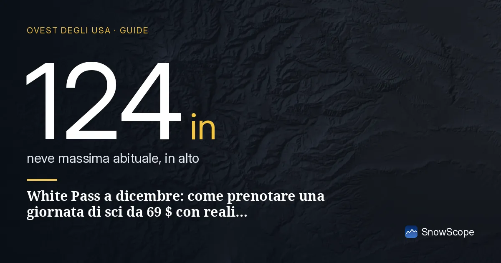

White Pass a dicembre: come prenotare una giornata di sci da 69 $ con reali probabilità di neve
White Pass premia chi pianifica. I biglietti adulto più economici si comprano online, in anticipo, a partire da 69 $ nei giorni fuori picco, e la nostra storia della neve dice che la seconda metà di dicembre è il momento in cui la scommessa diventa sicura.
Le previsioni neve in tempo reale per White Pass Ski Area nell'app SnowScopeAltezza neve, allerte powder e mappa 3D, gratis.
Un passo tranquillo all'ombra del Mount Rainier
White Pass si trova sulla US-12 a est di Packwood, all'ombra del Mount Rainier. Secondo la nostra mappatura ha 8 impianti di risalita e circa 22 mi (36 km) di piste, tra circa 4.480 ft (1.367 m) e 6.520 ft (1.987 m). Non c'è un villaggio da pagare, e questo spiega in parte perché una giornata qui costa meno che nei grandi nomi.
L'inverno di solito si stabilizza presto: nella mediana dei nostri 46 inverni, la neve duratura raggiunge mezza montagna a fine ottobre.

Il gioco della prenotazione
White Pass usa un prezzo online dinamico per la stagione 2026/27. I biglietti adulto partono da appena 69 $ nei giorni fuori picco, dal lunedì al giovedì fuori dalle festività, e 89 $ nei giorni di picco, dal venerdì alla domenica e nei giorni festivi. Man mano che una data si esaurisce, il prezzo sale a gradini, fino a 99 $ fuori picco e 119 $ in un giorno di picco.
In pratica, il prezzo più basso va a chi sceglie un giorno feriale e prenota presto. Se si aspetta il bollettino neve e poi si prenota un sabato di dicembre, bisogna aspettarsi di pagare più vicino alla fascia alta.

Quale settimana di dicembre prenotare
La nostra storia offre una scala chiara. La quota di inverni con buona neve a mezza montagna (una media settimanale di 20 in, 50 cm, o più) è del 74 % nella settimana dal 30 novembre al 6 dicembre, 85 % dal 7 al 13 dicembre, 91 % dal 14 al 20 dicembre e 96 % dal 21 al 27 dicembre.
In un 15 dicembre tipico, mezza montagna, a circa 5.500 ft (1.677 m), ha 40 in (102 cm) e la cima 42 in (107 cm). Entro il 31 dicembre mezza montagna arriva a 59 in (151 cm). Un dicembre magro (un inverno su dieci) aveva comunque 17 in (42 cm) a mezza montagna il 15, sufficienti per le piste battute, non per esplorare.
White Pass, Mt. Baker o Timberline?
Mt. Baker riceve più neve secondo i nostri numeri, 46 in (116 cm) a mezza montagna in un 15 dicembre tipico, ma vende i biglietti solo in giornata: 98,80 $ fuori picco e 115,42 $ in picco. Il biglietto giornaliero intero di Timberline è 129 $ fuori picco e 161 $ in picco.
Quindi White Pass è il più economico dei tre se si prenota presto un giorno fuori picco, e Mt. Baker è la scommessa neve più sicura. Entrambi battono sul prezzo un giorno di picco al Mt. Hood.
Un'altra porta d'ingresso: l'Indy Pass
White Pass è nella lista dell'Indy Pass per il 2026-27. L'Indy Base Pass costa 419 $ per gli adulti e dà due giorni in ciascuna delle oltre 300 stazioni associate, con date di blackout; l'Indy+ Pass a 469 $ elimina i blackout. Se si pianificano più gite su piccole stazioni questo inverno, vale la pena confrontarlo con qualche biglietto giornaliero online.
Consigli per sciatori
- Scegliete presto la vostra data di dicembre, e un giorno feriale, per ottenere la tariffa minima di 69 $.
- Se potete aspettare, prenotate la settimana dal 14 al 20 dicembre o più tardi: gli inverni passati sono stati molto più affidabili da allora.
- La US-12 sul passo può chiudere o richiedere le catene durante le tempeste: controllate il bollettino del passo prima di partire.
- Lo scorso inverno qui è stato molto scarso, quindi non giudicate questa stagione su di esso: guardate la mappa della neve la settimana prima.
Riferimenti e crediti
- White Pass, online day tickets 2026/27 (official) skiwhitepass.com/online-day-ticket-sales
- Indy Pass, shop 2026-27 (official) www.indyskipass.com/shop
- Mt. Baker Ski Area, daily lift tickets (official) www.mtbaker.us/tickets-and-passes/daily-lift-tickets/
- Timberline Lodge, winter lift tickets 2026/2027 (official) www.timberlinelodge.com/activities/winter/lift-tickets/
- OpenSkiMap (mapped lifts and runs) openskimap.org/
- avalanche.org, US avalanche centers and forecasts avalanche.org/
Su questi numeri
Numeri della neve: storico neve SnowScope, 46 inverni passati (1980-81 - 2025-26) alle quote indicate (base, metà, vetta), una ricostruzione della neve passata per un'area corretta per la quota (basata su ERA5-Land; Snow_Hydro 1 km per il Marocco), non i bollettini della località. Neve attuale: la mappa SnowScope. Impianti, piste e quote: mappatura OpenSkiMap. Prezzi: le pagine ufficiali elencate qui sotto, lette il 13 novembre 2026; i prezzi dinamici cambiano con la data e la domanda.
Bollettini valanghe ufficiali: avalanche.org (US national portal)
Cita questo articolo
Per ricerca, didattica o stampa: numeri e grafici sono liberamente riutilizzabili con licenza CC BY 4.0 citando così.
SnowScope (2026), White Pass a dicembre: come prenotare una giornata di sci da 69 $ con reali probabilità di neve, https://snowscope.app/blog/it/2026/11/white-pass-december-skiing-budget-2026.html, consultato il 2026-11-14
SnowScope (Atlas Labs). (2026, November 14). White Pass a dicembre: come prenotare una giornata di sci da 69 $ con reali probabilità di neve. SnowScope snow reports. https://snowscope.app/blog/it/2026/11/white-pass-december-skiing-budget-2026.html
BibTeX
@misc{snowscope2026whitepassdecemberskiingb,
author = {{SnowScope (Atlas Labs)}},
title = {White Pass a dicembre: come prenotare una giornata di sci da 69 $ con reali probabilità di neve},
year = {2026},
month = nov,
howpublished = {\url{https://snowscope.app/blog/it/2026/11/white-pass-december-skiing-budget-2026.html}},
note = {Published 2026-11-14 17:07 UTC; accessed 2026-11-14}
}· CC BY 4.0 · Metodi, dati e strumenti →
White Pass Ski Area: neve e temperatura per quota, quest'inverno vs lo scorso (strumenti) →
Segui White Pass Ski Area
Gratis: un messaggio quando arriva la neve e il meteo ogni mattina.